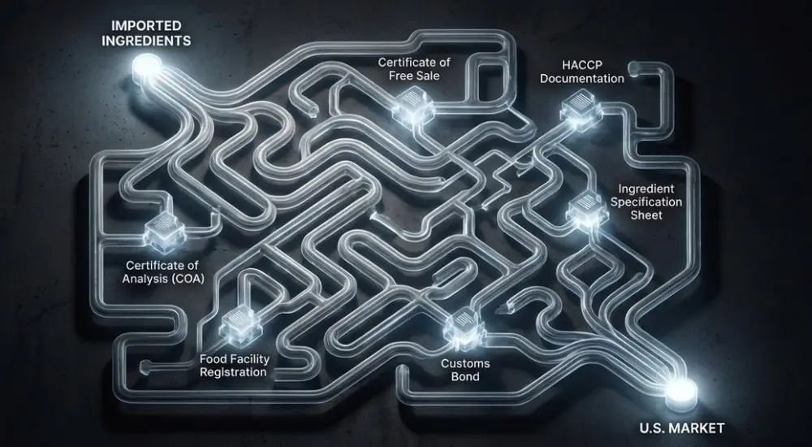
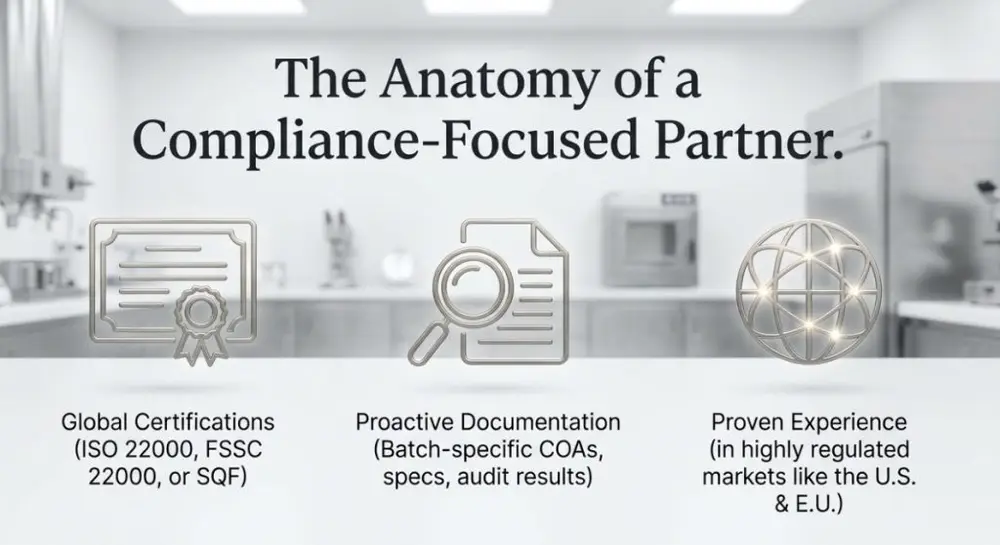

Articles / Tips & trends
Essential Compliance Documents for Importing Bubble Tea Ingredients
2025-12-31 · Sourcing, Sourcing
Original public content from Yen Chuan. Product claims and specifications remain subject to confirmation by the company.
Import documentation for bubble tea ingredients isn’t something most shop owners think about until they’re facing a shipment held at customs or, worse, a rejection notice from the FDA. But here’s the reality: getting your tapioca pearls, syrups, and powders from a supplier in Taiwan to your store in the United States involves navigating a complex web of regulatory requirements that can make or break your supply chain.
The FDA doesn’t take a casual approach to imported food products. Every shipment of bubble tea ingredients entering U.S. ports must clear regulatory hurdles designed to protect public health—from prior notification systems to certificate of analysis requirements to labeling compliance. Miss a single document or misunderstand a specification, and you’re looking at costly delays, storage fees, or product destruction.
What makes this particularly challenging for bubble tea businesses is the diversity of ingredient categories involved. You’re not importing a single product type—you’re bringing in modified starches (tapioca pearls), concentrated syrups with complex preservative systems, dehydrated powders with multiple functional ingredients, and specialty toppings that may contain novel food additives. Each category triggers different regulatory pathways, documentation requirements, and compliance protocols.
The good news? Once you understand the system, import compliance becomes manageable. The key is knowing which documents are absolutely mandatory, which are situational based on ingredient type, and how to work with suppliers who maintain the quality management systems that make compliance documentation routine rather than exceptional.
The FDA Prior Notice: Your First Regulatory Checkpoint
Before your shipment even leaves the origin country, U.S. law requires electronic submission of a Prior Notice (PN) to the FDA through their Automated Broker Interface system. This isn’t optional—it’s mandated under the Bioterrorism Act of 2002, and failure to file correctly will result in your shipment being refused entry.
The Prior Notice must include specific data elements: manufacturer identity, shipper details, country of origin, anticipated arrival information, and—critically—a detailed product description using FDA product codes. For bubble tea ingredients, you’ll typically be working with multiple product codes. Tapioca pearls might fall under starches and dextrins, while fruit syrups could be classified under fruit preparations. Getting these codes wrong is a common error that triggers automatic detention.
Most importers work with customs brokers who handle PN filing, but you should understand the timing requirements. For shipments arriving by sea, the PN must be submitted no more than fifteen calendar days before arrival and no less than eight hours before arrival. Air shipments require four hours advance notice. These aren’t guidelines—they’re legal requirements with zero tolerance.
What surprises many first-time importers is the level of detail required in ingredient declarations. If you’re importing a brown sugar syrup, the FDA wants to know every ingredient, including any processing aids or incidental additives. This means your supplier’s certificate of analysis needs to provide comprehensive compositional data, not just the major ingredients listed on consumer labels.
Certificate of Analysis: The Scientific Proof of Quality
A Certificate of Analysis (COA) is your supplier’s formal attestation that the product meets specified standards—and it’s one of the most critical documents in import compliance. The FDA can request COA documentation during inspections, and sophisticated importers use COAs proactively to verify product specifications before accepting shipments.
For bubble tea ingredients, a proper COA should include both microbiological and chemical specifications. Microbiological testing typically covers total plate count, yeast and mold counts, coliform bacteria, and specific pathogens like Salmonella and E. coli. Chemical analysis includes moisture content, pH, Brix (for syrups), and any relevant nutritional parameters. If your ingredients contain preservatives—sodium benzoate and potassium sorbate are common in fruit syrups—those levels must be quantified and verified to be within legal limits.
| Document Type | Required Information | When Needed | Issued By |
|---|---|---|---|
| Certificate of Analysis (COA) | Micro testing, chemical composition, heavy metals, allergens | Every shipment batch | Supplier’s QC lab or third-party lab |
| Certificate of Free Sale | Confirms product legally sold in origin country | First import, then annually | Government health authority |
| HACCP Documentation | Hazard analysis, critical control points, monitoring records | FDA inspection or audit | Supplier’s quality system |
| Ingredient Specification Sheet | Full ingredient list, processing aids, allergen declarations | Prior to first import | Supplier’s technical team |
| Food Facility Registration | FDA registration number for manufacturing facility | One-time (renewed biennially) | FDA (via supplier) |
What separates professional suppliers from problematic ones is COA consistency. Every production batch should have its own COA with unique lot numbers that trace back to specific manufacturing dates. If a supplier provides generic COAs or refuses to supply batch-specific testing data, that’s a red flag indicating inadequate quality management systems.
Third-party laboratory testing adds another layer of credibility. While suppliers can issue COAs based on their internal testing, having periodic verification from ISO 17025 accredited laboratories demonstrates independence and technical competence. For high-risk ingredients or new suppliers, many importers require third-party COAs for the first several shipments before accepting supplier self-testing.


Labeling Compliance: More Than Translation
FDA labeling requirements for imported foods are exacting, and noncompliance can result in detention or refusal of entry. For bubble tea ingredients, you’re typically dealing with bulk packaging intended for foodservice use, but that doesn’t exempt you from labeling regulations—it just shifts which requirements apply.
All food labels must be in English and include the common or usual name of the product, the name and address of the manufacturer or distributor, net contents declaration, and a complete ingredient statement listed in descending order of predominance by weight. For ingredients with potential allergens—milk powder in some premixed bases, soy lecithin in certain formulations—these must be clearly declared using FDA-specified terminology.
The ingredient statement itself requires careful attention. Processing aids used during manufacturing but not present in the final product may or may not need to be declared depending on function. Color additives must be specifically named (you can’t just write “artificial colors”). If the product contains any ingredients subject to GRAS (Generally Recognized as Safe) requirements but not previously approved for that use, additional documentation becomes necessary.
Country of origin labeling (COOL) adds another layer. The FDA requires that the country where the product was manufactured or produced must be declared. For bubble tea ingredients manufactured in Taiwan and imported by U.S. distributors, the label must indicate “Product of Taiwan” or similar clear origin statement.
GRAS Status and Food Additive Regulations
One area that frequently trips up importers is understanding which ingredients require pre-market approval versus GRAS status. The FDA distinguishes between food additives (which require FDA approval before use) and GRAS substances (which can be used based on either published scientific evidence or expert consensus).
Many functional ingredients common in bubble tea products—modified starches for texture control, certain hydrocolloids for viscosity management, specific preservative systems—occupy a gray zone where GRAS status depends on use levels and applications. If you’re importing a syrup containing a novel sweetener or a powder using a processing aid not previously used in similar applications, you may need to demonstrate GRAS status or secure food additive approval.
Smart suppliers maintain GRAS documentation for all functional ingredients used in their formulations. This includes published safety assessments, toxicology data, and use level justifications. As an importer, you should request this documentation before committing to a new ingredient, particularly if it contains components that aren’t widely used in the U.S. market.
The FDA’s food additive database is publicly searchable, but interpreting it requires technical knowledge. Some ingredients have approval for specific uses but not others. Potassium sorbate, for instance, is approved as a preservative at certain levels in specific product categories—using it outside those parameters could trigger additive violations even though the ingredient itself is legal.

Import Entry Documents and Customs Bonds
Beyond food safety documentation, every import requires customs entry processing—a separate regulatory system administered by U.S. Customs and Border Protection (CBP) working in coordination with the FDA. The core documents include the commercial invoice, packing list, bill of lading or airway bill, and customs entry forms.
The commercial invoice must precisely describe the goods using Harmonized Tariff Schedule (HTS) codes. Bubble tea ingredients fall under various HTS classifications depending on product type. Getting the classification wrong doesn’t just affect duty calculations—it can also trigger incorrect FDA product code assignments in the Prior Notice system, creating cascading compliance issues.
A customs bond is financially required for most commercial imports, serving as insurance that all duties, taxes, and potential penalties will be paid. For regular importers, an annual bond typically makes more sense than single-entry bonds. Bond amounts are calculated based on the total value of goods imported, with minimums around $50,000 for continuous bonds.
What many new importers don’t realize is that the FDA can issue an Import Alert on specific products, suppliers, or ingredient categories that triggers automatic detention. These alerts are publicly listed on the FDA website. Before establishing a new supply relationship, checking whether your supplier or their products appear on any Import Alerts can save significant headaches. Detained shipments rack up storage fees and may require additional testing or documentation to gain release.
Food Facility Registration and Supplier Qualifications
Under the FDA’s Food Safety Modernization Act (FSMA), all facilities that manufacture, process, pack, or hold food for consumption in the U.S. must register with the FDA. This includes foreign suppliers. Your bubble tea ingredient supplier must have a valid FDA registration number, which should be included in your import documentation.
But registration is just the baseline. FSMA’s Foreign Supplier Verification Program (FSVP) requires U.S. importers to verify that foreign suppliers are producing food safely and in compliance with U.S. standards. This means you can’t simply trust that a supplier’s registration alone ensures compliance—you need documented verification procedures.
FSVP compliance typically involves evaluating supplier food safety systems, reviewing relevant testing and certification records, conducting periodic supplier audits, and maintaining documentation of all verification activities. For many small bubble tea businesses, working with importers or distributors who already have established FSVP programs is simpler than trying to build verification systems independently.
If you’re importing directly from Taiwan or other countries, consider whether your suppliers hold relevant food safety certifications. ISO 22000, FSSC 22000, or SQF (Safe Quality Food) certifications demonstrate sophisticated food safety management systems and can simplify FSVP verification. Some retailers and chains now require these certifications as a prerequisite for supplier relationships.


Temperature Control Documentation and Cold Chain Integrity
For certain bubble tea ingredients—particularly anything requiring refrigeration or freezing—maintaining cold chain documentation becomes part of your compliance obligation. If you’re importing refrigerated fruit purees, frozen tapioca pearls, or temperature-sensitive probiotics for functional beverages, you need documented evidence that temperature control was maintained throughout transit.
Temperature data loggers are increasingly standard for cold chain shipments. These devices record temperature continuously during transport, creating an audit trail that demonstrates product remained within safe temperature ranges. If a temperature excursion occurs—equipment failure, extended customs hold, whatever the cause—you have objective data to make decisions about product safety and quality.
The challenge with international shipments is that multiple handling points create opportunities for temperature compromise. Loading and unloading at ports, transfer between carriers, customs inspection holds—all represent potential weak points. Suppliers experienced in international cold chain logistics build buffer capacity into their packaging systems and provide temperature validation data demonstrating that their packaging can maintain required temperatures even with some delays.
Building a Compliance Partnership with Your Supplier
The most successful import operations treat compliance as a partnership rather than an adversarial verification process. When evaluating potential bubble tea ingredient suppliers, look for indicators that they understand and prioritize regulatory compliance:
- Proactive provision of COAs, specifications, and regulatory documentation without requiring repeated requests
- Willingness to share food safety certifications, audit results, and continuous improvement data
- Clear communication about any formulation changes, supplier changes, or production issues that might affect compliance
- Investment in quality management systems that exceed minimum requirements
- Experience successfully supplying to regulated markets like the U.S., EU, Japan
Red flags include reluctance to provide documentation, generic or outdated certificates, inconsistent lot numbers, or inability to explain their quality management systems. These aren’t just inconveniences—they’re indicators of suppliers who may create significant compliance risks for your business.
The investment in working with compliance-focused suppliers pays dividends in reduced risk, fewer shipment delays, and peace of mind that your supply chain can withstand regulatory scrutiny. As FDA enforcement increasingly emphasizes supply chain accountability, the companies that thrive will be those with documented, verifiable supplier quality management systems.
Staying Current with Regulatory Changes
Food import regulations aren’t static—they evolve as new food safety concerns emerge, scientific understanding advances, and regulatory priorities shift. Recent years have seen increased FDA focus on heavy metal contamination (particularly lead in certain food categories), microbiological risks in low-moisture foods, and allergen cross-contact during manufacturing.
Subscribe to FDA updates relevant to food imports, particularly the Import Alerts system and the Federal Register notices about new food additive approvals or GRAS determinations. Industry associations like the Institute of Food Technologists (IFT) provide regulatory intelligence services that track changes and interpret their implications for specific product categories.
Working with experienced customs brokers who specialize in food imports provides another layer of regulatory navigation. These professionals stay current with changing requirements and can often identify potential compliance issues before they become problems. Yes, brokers charge fees, but the cost is typically far less than dealing with a single detained shipment or refused entry.
FAQ
Essential documents include FDA Prior Notice, Certificate of Analysis (COA), commercial invoice, packing list, bill of lading, FDA food facility registration number, ingredient specification sheets, and labeling compliance documents. Temperature-controlled products require temperature data logger records. Suppliers should hold ISO 22000 or FSSC 22000 certifications. Missing any document can cause customs detention, storage fees, or entry refusal, disrupting your supply chain.
A COA is the supplier’s formal attestation that products meet specified standards. It should include microbiological testing (bacteria counts, pathogens) and chemical analysis (moisture, pH, preservative levels). Each batch needs its own COA with unique lot numbers for traceability. FDA can request COAs during inspections. Professional suppliers use ISO 17025 accredited third-party labs for testing to demonstrate independence and technical competence.
FDA Prior Notice is mandatory electronic filing required under the Bioterrorism Act of 2002, submitted through the Automated Broker Interface before shipment departure. It must include manufacturer identity, shipper details, origin country, arrival information, and product descriptions using FDA codes. Sea shipments: submit 8 hours to 15 days before arrival. Air shipments: 4 hours minimum. Incorrect codes trigger automatic detention. Most importers use customs brokers for filing.
Verify suppliers have valid FDA food facility registration numbers (FSMA requirement). Evaluate their food safety systems and request ISO 22000, FSSC 22000, or SQF certifications. Under FSMA’s Foreign Supplier Verification Program (FSVP), US importers must verify foreign suppliers produce food safely and meet US standards. Conduct periodic audits and maintain verification documentation. Choose suppliers who proactively provide documentation, share audit results, and communicate formulation changes clearly.
All labels must be in English with product name, manufacturer/distributor address, net contents, and complete ingredient list (by weight, descending order). Allergens require FDA-specified terminology. Color additives need specific names—not “artificial colors.” Country of Origin Labeling (COOL) mandates manufacturing location. Taiwan-manufactured ingredients imported by US distributors must state “Product of Taiwan.” Non-compliance causes detention or entry refusal.
Sources & References
- FDA – Importing Food Products into the United States — Official requirements and procedures
- USDA Foreign Agricultural Service — International trade regulations
- Institute of Food Technologists (IFT) — Food safety standards and compliance guidance
- Codex Alimentarius Commission — International food standards
- U.S. Customs and Border Protection — Import entry requirements and HTS classifications
About the Author
Michael Zhang is a Regulatory Affairs Specialist at YenChuan, focusing on international food import compliance and supply chain quality management. With 8 years of experience navigating FDA regulations for specialty food ingredients, he works closely with importers to ensure seamless regulatory compliance for bubble tea ingredients entering the U.S. market. Michael holds a Master’s degree in Food Science from National Taiwan University and previously worked in quality assurance for multinational food companies. He believes that effective compliance isn’t about checking boxes—it’s about building systems that protect both consumers and businesses while enabling innovation in global food supply chains.
Connect with the YenChuan team on LinkedIn.
Ready to Simplify Your Import Compliance?
Working with a supplier who understands U.S. regulatory requirements isn’t just convenient—it’s essential for building a reliable, compliant supply chain. YenChuan has been navigating international food regulations for over 30 years, providing comprehensive documentation, quality assurance, and regulatory support for bubble tea ingredient imports. Our FDA-registered facility maintains ISO 22000 certification and full traceability systems that make compliance documentation straightforward, not stressful.
From certificate of analysis for every batch to HACCP documentation and allergen management systems, we provide the regulatory infrastructure that protects your business and satisfies FDA requirements.
Let’s discuss how we can support your import compliance needs. Book a consultation with our team →